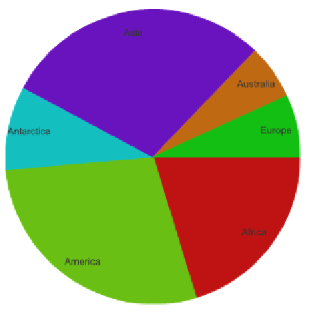
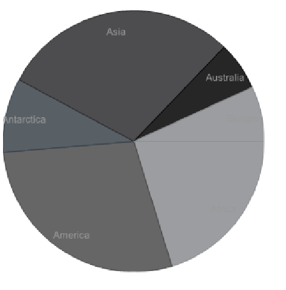

Dojo offers a few Themes for charting.
Those permits to use default colors.
You can choose to use a theme with the method Chart2D.setTheme:
Where theme is a constant defined in the Themes class.
Example :


The chart, axis, and Series options are exactly the same on the two charts.
The only thing which has changed is the Theme.